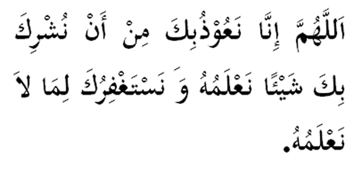

|

Terjemahan "Ya Allah, sesungguhnya kami mohon perlindunganMu daripada mensyirikkanMu dengan sesuatu yang kami ketahui dan kami mohon ampun kepadaMu daripada apa jua perkara yang tidak kami ketahui." Fadhilat Wirid Daripada Abu Musa al-Ash'ari : Suatu hari Rasulullah (SAW) telah memberikan ucapan kepada kami demikian sabdanya: "Wahai manusia, hendaklah kamu takut daripada syirik kerana ia merupakan satu benda sulit yang lebih sulit daripada melatanya semut." Maka ditanya oleh seorang hamba Allah (SWT) : "Bagaimanakah wahai Rasulullah kami terus memeliharanya sedangkan ia lebih sulit daripada melatanya semut ?" Maka jawab baginda (SAW): "Bacalah olehmu sebanyak tiga kali setiap hari (bacaan di atas)." |